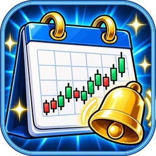

相場を動かす可能性のある発表の予定を、前もって確かめるために
Investing.com（日本語版）の経済指標カレンダーを使います。世界の経済指標の発表の予定と結果が、リアルタイムで表示されます。
※ 画面に出る広告や証券会社の紹介は Investing.com のもので、当サイトとは関係ありません。カレンダーは、それらを押さなくても使えます。
発表ごとに、相場への影響の大きさが星1〜3つで示されます。
結果が予想を上回ると緑、下回ると赤で表示されます。
画面の上の「現在の時刻」の横に、表示している時間帯が出ます。日本時間なら「GMT+9:00」です。時間帯は「フィルターを表示する」から変えられます。
「フィルターを表示する」で、国・種類・重要度でしぼり込めます。「本日」「明日」「今週」などで日付を選べます。
サイトの説明では、次の発表が、ふつう星3つで示される影響の大きい発表として挙げられています。
⚠ 発表の予定は、急に変わることがあります（カレンダーのサイトにも、そう書かれています）。大事な場面では、ほかの情報とも合わせて確かめてください。
ご不明な点は公式 LINE までお気軽にご相談ください。